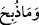
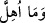

düşer ve ölürse bu takdirde onun eti haram olur. Artık o, yüksek yerden düşerek ölen
hayvanın hükmüne tâbîdir. Fakat havadaki bir ava atılan ok, avın boğazına isabet ederse
artık o, yere ne şekilde düşerse düşsün eti helaldir. Çünkü okun boğazına isabet
etmesiyle kesmekle elde edilecek netîce hâsıl olmuştur. Fakat boğazlanmadan önce
parçalanan av, leş hükmündedir.
Şer’an boğazlamak, gırtlak ile gırtlağa bitişik olan yeme ve içme borusunu kesmektir.
Boğazlamanın asgarisi, güç yetirilen hayvanlarda boğaz ile gırtlağı kesmektir.
Boğazlamanın şartlarına tam anlamıyla uygun olarak yapılanı ise, yemek ve nefes
boruları ile birlikte iki şah damarını da keserek yapılanıdır. Boğazlama, keskin demir
parçası, keskin kamış, cam, taş parçası ve benzeri kesici aletlerle yapılabilir.
Ulemânın cumhuruna göre iki şah damarını kesen ve kanı akıtan her âlet ile boğazlama
yapılabilir. Ancak diş, tırnak ve kemikle yapılanlar hâriç. Bununla birlikte diş ve tırnak
yerlerinden sökülmüş olursa, o vakit onlarla da boğazlama yapılabilir. Sökülmüş
olmayan diş ve tırnakla yapılan kesim ise boğma hükmündedir. Yerinden sökülmüş
olanlarla yapılan boğazlamada şah damarları kesiliyorsa, bu şekilde yapılan kesim
cumhura göre câizdir.
Kesimi tam ve şer’a uygun olarak yapılan hayvanın eti helaldir. Hadiste şöyle
buyurulmuştur: “Boğazlamak, hayvanı gerdanı ile çenesi arasından kesmektir.”[237]
Buna göre Eflak’tan İslâm diyârına gelen kurutulmuş eti yemek câiz değildir. Çünkü
onlar sığırları ve diğer hayvanları, başlarına balta ve benzeri şeylerle vurarak
öldürmektedirler. Bu ise, boğazlamak değildir.
“Dikili taşlar (putlar) üzerine boğazlanan hayvanlar” da haramdır. Dikili taşlardan
maksat, Kâbe’nin etrafında dikili olan taşlardır. İnsanlar onların yanında kurban
keserler ve böylece putlarına yaklaştıklarına inanırlardı.
İmam Fahrüddin Râzî der ki: İnsanlardan bâzıları “nusub” ile kastedilen “putlar”
dır, derler. Bu uzak bir ihtimaldir. Çünkü “
” cümlesi, “
” cümlesine
atfedilmiştir. “Allah’tan gayrısı adına kurban kesmek” le kastedilen, “putlar adına
kesmek” tir. İnsanlar bundan menedilmiştir.
İbn Cüreyc şöyle der: “Nusub” ile putlar kastedilmemiştir. Çünkü putlar, şekil
verilmiş, nakışlı taşlardır. Oysa “nusub”, Kâbe’nin etrâfına dikilmiş taşlardır. Cahiliye
insanları onların yanında putlarına kurban keserlerdi. Kestikleri kurbanların kanlarını
“nusub” denilen bu taşlara sürerler ve kurbanların etlerini de o taşların üzerine
bırakırlardı. Müslümanlar Efendimiz (s.a.v.)’e: Yâ Rasûlallah, câhiliye ehli bu taşların
yanında kurban keserek Kâbe’yi ta’zîm ederlerdi. Halbuki Kâbe’yi tâzim etmeye biz
onlardan daha çok lâyıkız.” dediler. Efendimiz (a.s) da bunu kerih görmedi. Bunun
üzerine şu âyet-i kerime nâzil oldu: “Onların etleri ve kanları aslâ Allah’a ulaşmaz.
Fakat sizin takvânız O’na ulaşır.” (Hac, 22/37) Râzî’nin açıklamaları burada sona
ermiştir.
“Fal oklarıyla kısmet aramanız size haram kılındı.” Âyette geçen “Ezlâm”